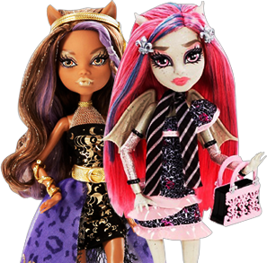

Новая коллекция кукол
"13 желаний" и "ночь нечисти"
уже в продаже!

Магазин детских развивающих игрушек!
Счастливое детство неразрывно связано с играми. Они помогают
ребенку познавать мир, развиваться физически и эмоционально.
Покупать детские игрушки не так легко, как кажется. Чтобы
они пришлись по вкусу ребенку, важно учитывать ряд критериев:
пол и возраст, предпочтения, навыки, характер. Конечно, нельзя
обойти вниманием такие аспекты, как качество и безопасность.
Где в Москве можно купить развивающие игрушки для детей по доступной цене?
Приглашаем за покупками в наш магазин! Мы предлагаем широкий ассортимент детских развивающих игрушек для мальчиков и девочек разных возрастов. В продаже только высококачественные и безопасные во всех отношениях изделия, с которыми детям будет интересно играть. Формируя каталог, магазин детских развивающих игрушек объективно оценивал их как с позиции взрослых, так и с позиции ребенка. Наших покупателей порадуют низкие цены и оперативная доставка заказов.
Что купить маленьким непоседам?
Откройте наш каталог и выбирайте из массы интересных вариантов:
- Товары для активного отдыха, пользоваться которыми можно дома и на свежем воздухе. Они помогут найти выход для бесконечной энергии ребенка и просто весело провести время.
- Герои любимых мультиков – Винкс, Барби, персонажи из Школы монстров, Тачки, Хелло Китти и т.д. Малыши смогут развивать мышление, придумывать сказочные истории, проходить миссии, сражаться, фантазировать. Захватывающие игры, полные эмоций и приключений, обеспечены!
- Настольные игры, головоломки, наборы для творчества, способствующие развитию мелкой моторики, логики, мышления, воображения. Отличный инструмент для воспитания усидчивости и терпения!
- Забавные аксессуары – часы, браслеты, наклейки, а также рюкзаки, зонтики и сумки с броскими принтами. Наполнят будничную жизнь яркими красками.
В магазине «Тойдекс» оригинальные игрушки для детей отменного качества можно купить оптом и в розницу.